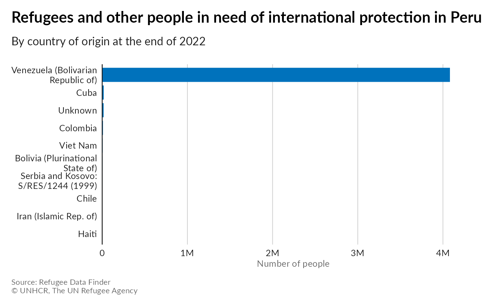

plot_top10_by_country_and_year
plot_top10_by_country_and_year( year = 2022,
countryname = "Peru")
#> Scanning ttf files in /usr/share/fonts/, /usr/local/share/fonts/, ~/.local/share/fonts/, ~/.fonts/ ...
#> Extracting .afm files from .ttf files...
#> /usr/share/fonts/truetype/lato/Lato-Black.ttf : Lato-Black already registered in fonts database. Skipping.
#> /usr/share/fonts/truetype/lato/Lato-BlackItalic.ttf : Lato-BlackItalic already registered in fonts database. Skipping.
#> /usr/share/fonts/truetype/lato/Lato-Bold.ttf : Lato-Bold already registered in fonts database. Skipping.
#> /usr/share/fonts/truetype/lato/Lato-BoldItalic.ttf : Lato-BoldItalic already registered in fonts database. Skipping.
#> /usr/share/fonts/truetype/lato/Lato-Hairline.ttf : Lato-Hairline already registered in fonts database. Skipping.
#> /usr/share/fonts/truetype/lato/Lato-HairlineItalic.ttf : Lato-HairlineItalic already registered in fonts database. Skipping.
#> /usr/share/fonts/truetype/lato/Lato-Heavy.ttf : Lato-Heavy already registered in fonts database. Skipping.
#> /usr/share/fonts/truetype/lato/Lato-HeavyItalic.ttf : Lato-HeavyItalic already registered in fonts database. Skipping.
#> /usr/share/fonts/truetype/lato/Lato-Italic.ttf : Lato-Italic already registered in fonts database. Skipping.
#> /usr/share/fonts/truetype/lato/Lato-Light.ttf : Lato-Light already registered in fonts database. Skipping.
#> /usr/share/fonts/truetype/lato/Lato-LightItalic.ttf : Lato-LightItalic already registered in fonts database. Skipping.
#> /usr/share/fonts/truetype/lato/Lato-Medium.ttf : Lato-Medium already registered in fonts database. Skipping.
#> /usr/share/fonts/truetype/lato/Lato-MediumItalic.ttf : Lato-MediumItalic already registered in fonts database. Skipping.
#> /usr/share/fonts/truetype/lato/Lato-Regular.ttf : Lato-Regular already registered in fonts database. Skipping.
#> /usr/share/fonts/truetype/lato/Lato-Semibold.ttf : Lato-Semibold already registered in fonts database. Skipping.
#> /usr/share/fonts/truetype/lato/Lato-SemiboldItalic.ttf : Lato-SemiboldItalic already registered in fonts database. Skipping.
#> /usr/share/fonts/truetype/lato/Lato-Thin.ttf : Lato-Thin already registered in fonts database. Skipping.
#> /usr/share/fonts/truetype/lato/Lato-ThinItalic.ttf : Lato-ThinItalic already registered in fonts database. Skipping.
#> Found FontName for 0 fonts.
#> Scanning afm files in /home/edouard/R/x86_64-pc-linux-gnu-library/4.3/extrafontdb/metrics